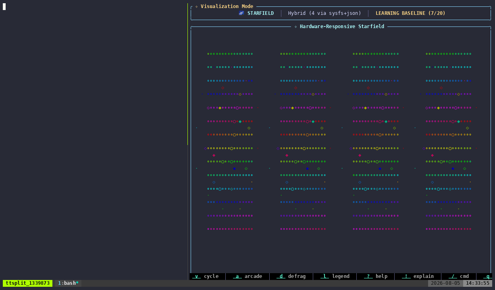
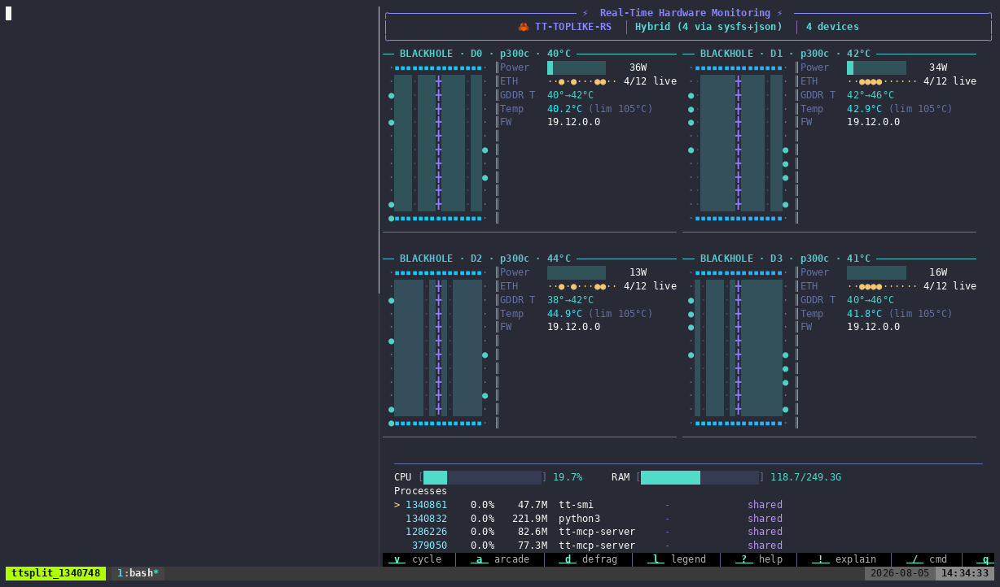
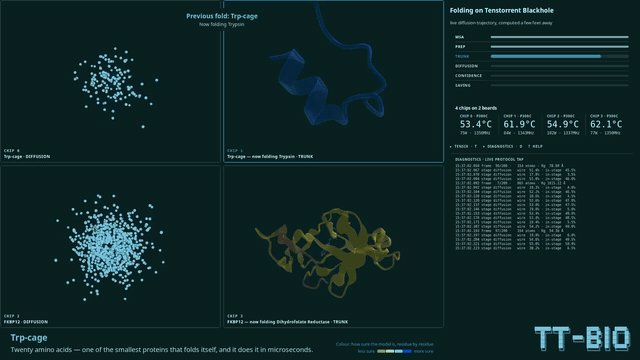
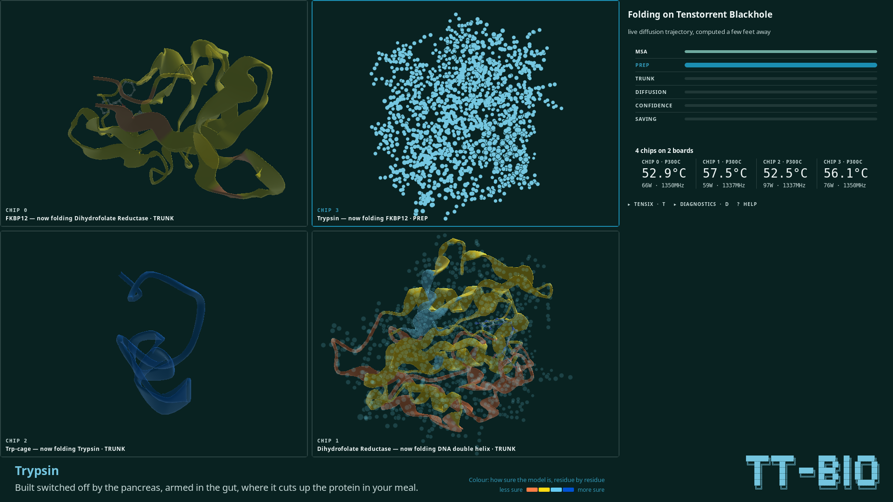
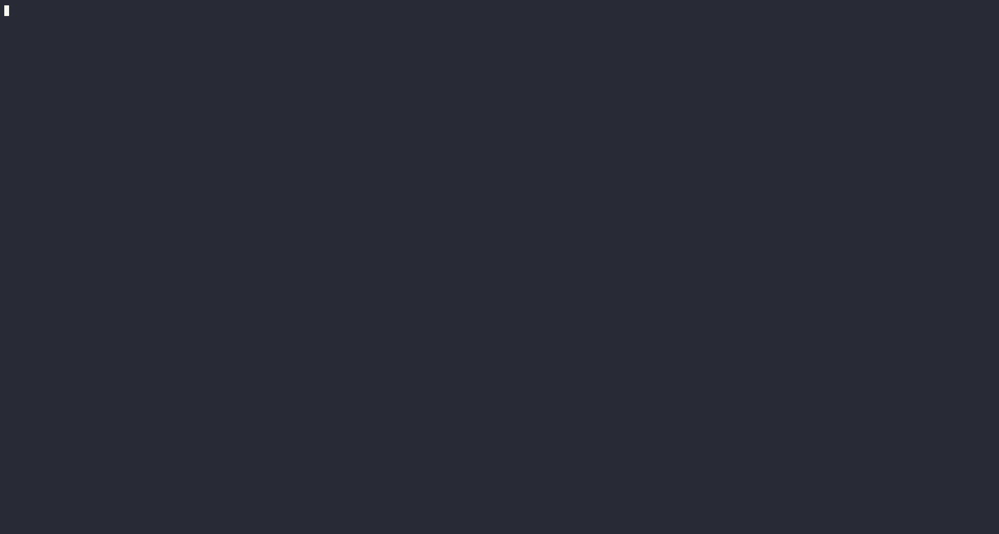
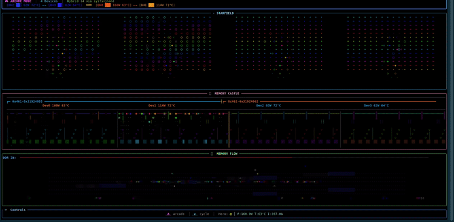
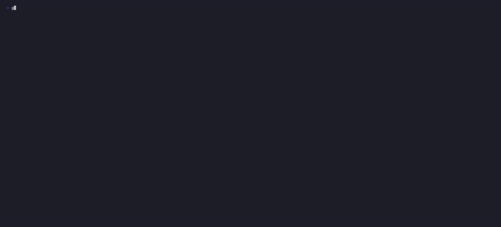
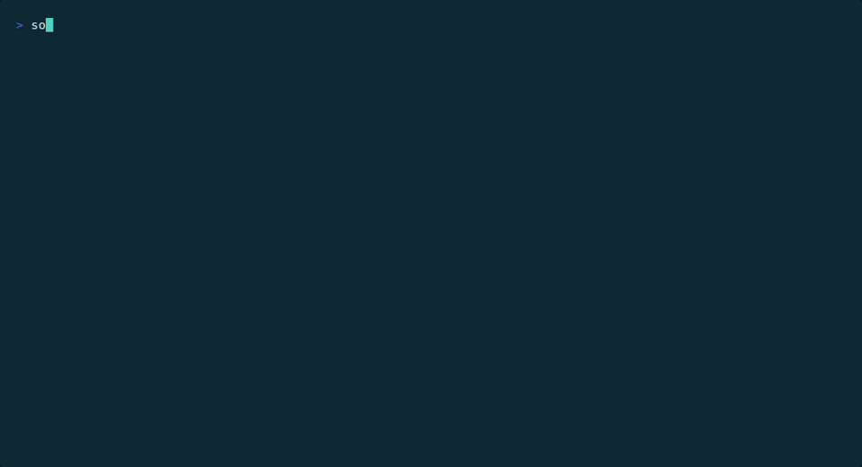

Tenstorrent · demo tooling
tt-demo-maker
A reusable toolkit for turning a running TUI/CLI into recorded footage — asciicast, GIF, MP4 — and a first-draft post pairing each directive with the reaction it caused. Point it at your project, describe the scenes, and it does the terminal ballet.
Describe scenes, get footage and a draft post
You describe scenes in a small YAML manifest — demo/demos.yaml — and the toolkit records them: split-pane terminal captures via tmux, encoded through asciinema or VHS, rendered to themed GIF/MP4, idle-trimmed, and verified before they ship. A companion Claude skill can author and edit that manifest from a plain-English request.
A parallel path exists for GUI apps that draw to a window instead of a terminal: lib/screen_capture.sh records the screen via OBS or Spectacle, and refuses to pass a black or locked-screen capture — three of its backends fail by producing a plausible file that's entirely one color, the worst kind of failure because it looks like a working recording until someone plays it back.
tt-demo-maker recording itself
Three scenes recorded by this toolkit on real hardware — a QuietBox with 4× P300C
(Blackhole) boards — from this repo's own demo/demos.yaml.
In each, the left pane runs a real ttnn matmul burst on device 0
(demo/tt-burst.sh) and the right pane is
tt-toplike --backend hybrid watching live board telemetry.



Ouroboros — tt-demo recording tt-demo
Footage of the tool recording the footage above, end-to-end through the
rehearse → record → compress → render → verify → publish flow.
Scrub the raw recording
The asciicast behind the starfield GIF above, played back live rather than as a looping GIF:
One scene, in YAML
Each scene names a layout, the command(s) that run in each pane, a duration, and a caption.
This is the cold-load scene from the reference example
(examples/demos.yaml):
project: tt-toplike
theme: tt-brand
defaults: { cols: 200, rows: 50, backend: "--host", outputs: [cast, gif] }
scenes:
- id: cold-load
title: "Cold model load (host proxy)"
layout: split
left: { run: "yes > /dev/null & sleep 6; kill %1" }
right: { run: "tt-toplike {backend} --mode arcade" }
duration: 8s
split_ratio: 40
caption: "Load ramps the host; the arcade hero climbs as power rises."The full field reference lives in skill/manifest-schema.md.
tt-bio-demo — the GUI screen-capture path
Not every demo is a terminal. tt-bio-demo is a protein-folding booth —
a graphical app whose whole point is what it draws — so it records through
lib/screen_capture.sh instead of the tmux/asciinema path:
OBS started under systemd-inhibit, verified against a black-frame check before
any cut ships.


From its own docs: recordings/README.md runs
lib/screen_capture.sh verify on every cut before it ships — the same
not-black, not-locked-screen check described above.
Before the tool existed, projects rolled their own
tt-demo-maker exists because several projects had already built — and rebuilt — the same tmux + asciinema/VHS machinery by hand. A few of those hand-rolled recordings, predating this toolkit:




Further afield: qb2-guide built an entire onboarding site
off thirteen separate VHS tapes, and cosmoetape extends VHS's own tape format
with GUI commands (Launch/WaitApp/Focus/Quit)
rather than just using it — a sibling tool rather than a precursor.
Quickstart
./install.sh # build tt-demo, symlink it and the Claude skill
tt-demo doctor # check for tmux, asciinema, vhs, agg, ffmpeg, Xvfb, xterm
tt-demo init # scaffold demo/demos.yaml, demo/assets/, demo/.gitignore
$EDITOR demo/demos.yaml # describe your scenes
tt-demo record --dry-run # validate + print the capture plan; touches no hardware
tt-demo rehearse <id> # preflight: does the directive move real telemetry?
tt-demo record all # capture every scene
tt-demo compress demo/assets/<id>.cast # idle-trim -> <id>.min.cast
tt-demo render <id> --gif # (or --mp4) themed + tuned via defaults.render
tt-demo verify <id> # contact-sheet PNG of the rendered footage
tt-demo publish all --readme README.md # copy artifacts + splice the gallery
tt-demo post --narrate claude # assemble demo/POST.draft.md
Everything here is hardware-free and network-free to test:
(cd bin && cargo test), ./tests/e2e_golden.sh walks the whole
pipeline end to end in a throwaway directory. See README.md
for the full requirements, repository layout, and current v1.1 limitations.